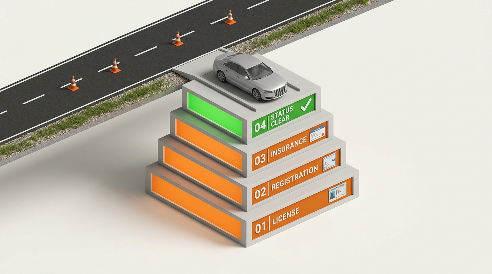

Reduce Risk: Synthesis & Application
Safe highway transit in Texas is not an abstract concept; it is an engineered matrix of statutory readiness, physical verification, and real-time legal accountability. Before the ignition turns, every operational requirement must interlock.
Before You Drive

“A 3D vehicle parked at the edge of a Texas roadway. 4 readiness conditions (License, Registration, Insurance, Driving Status) form the physical foundation beneath the vehicle. The road only opens when all 4 are verified.”
Ready to Drive? The Legal Foundation
Inspect the vehicle preparing to enter the highway. Toggle the four statutory foundation strata beneath the chassis to observe systemic stability.
Valid Texas Class C or appropriate credential in physical possession.
Windshield validation decal affixed (Two Steps, One Sticker), county taxes satisfied.
TexasSure real-time verification compliant policy or statutory proof document.
No active administrative suspensions, revocations, cancellations, or denial orders.
Fix the Risk & Follow the Consequence
Analyze realistic Texas transit infractions. Trace the branching legal pipeline: choose between lawful statutory mitigation or taking the wheel unlawfully.
Marcus bought a used sedan from a neighbor 38 days ago. The seller provided a signed title, but Marcus hasn't visited the County Tax Assessor-Collector office or obtained a vehicle inspection report.
The 30 / 60 / 25 Tactile Memory Moment
Texas Transportation Code § 601.072 establishes rigid minimum liability ceilings. Match each statutory monetary token to its exact legal destination.
Medical expenses, emergency care, loss of income, pain and suffering for an individual in an at-fault crash.
Total aggregate bodily injury coverage available for two or more individuals per incident, regardless of how many persons are harmed.
Destruction or repair of other vehicles, utility fixtures, roadway barriers, street signage, or private structures.
Final Challenge: Would You Drive?
Execute decisive legal judgment. Review the driver condition telemetry and issue your binding operational verdict.
New Texas Resident // Day 45 Since Relocation // Vehicle Unregistered
Devon relocated from Oklahoma to Fort Worth 45 days ago for work. He has valid Texas 30/60/25 liability insurance and holds a valid Oklahoma driver license. He is running late to work and plans to drive his Oklahoma-registered car across town. Under Texas Transportation Code § 502.040, is he permitted to turn the ignition?
The Four Inviolable Strata of Texas Motoring
You have analyzed and synthesized the foundational requirements of the Texas Driver Handbook and Transportation Code Chapters 521, 502, and 601. Remember: driving on Texas roads is a conditional statutory privilege. Ignorance of registration deadlines, insurance lapses, or credential restrictions never exempts an operator from strict liability.